Formula 1 Seasons
Below is a list of all of the Formula 1 seasons in the decade; click on a year to see the cars and drivers featured on stamps for that specific Formula 1 season. Also listed are any specific events for the season featured on stamps in my collection and/or any stamps that feature the season in question. Click on an event or a championship winning driver name to see the stamps featuring that particular event or driver.
Below is a list of all of the Formula 1 seasons in the decade; click on a year to see the cars and drivers featured on stamps for that specific Formula 1 season. Also listed are any specific events for the season featured on stamps in my collection and/or any stamps that feature the season in question. Click on an event or a championship winning driver name to see the stamps featuring that particular event or driver.
2010
Sebastian Vettel became the youngest driver to win the drivers' title; Red Bull Racing won the constructors' title with a one-two finish at the Brazilian Grand Prix. Vettel won the championship at the final race of the season in Abu Dhabi - going into the race there were four drivers in contention for the title. The 2010 season was Bridgestone's last season as the sole tyre supplier to the Formula 1 teams - and it was announced that Pirelli would become the sole tyre supplier from 2011. The 2009 constructors' champions Brawn GP were taken over by Mercedes-Benz and renamed Mercedes GP; their driver line-up saw the return of seven-time World Champion Michael Schumacher, who came out of retirement after a three year absence from the sport. The season consisted of 19 motor races held in 18 countries on five continents.
Sebastian Vettel became the youngest driver to win the drivers' title; Red Bull Racing won the constructors' title with a one-two finish at the Brazilian Grand Prix. Vettel won the championship at the final race of the season in Abu Dhabi - going into the race there were four drivers in contention for the title. The 2010 season was Bridgestone's last season as the sole tyre supplier to the Formula 1 teams - and it was announced that Pirelli would become the sole tyre supplier from 2011. The 2009 constructors' champions Brawn GP were taken over by Mercedes-Benz and renamed Mercedes GP; their driver line-up saw the return of seven-time World Champion Michael Schumacher, who came out of retirement after a three year absence from the sport. The season consisted of 19 motor races held in 18 countries on five continents.
Constructor Title: Red Bull |
60 Years of F1 at Silverstone Mark |
25th Anniversary of the Hugarian Grand Prix |
50th Anniversary of Birth of Senna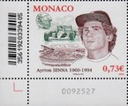 |
Automobile Club de Monaco 120th Anniversary |
50th Anniversary of Birth of Senna |
50th Anniversary of Birth of Senna |
50th Anniversary of Birth of Senna |
Yas Marina Circuit Souvenir Stamps |
50th Anniversary of Birth of Senna |
60 Years of F1 at Silverstone Mark |
2010 Red Bull Formula 1 Champions  |
2010 Brazil Grand Prix Red Bull 1-2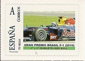 |
2010 Japanese Grand Prix Red Bull 1-2  |
2010 Malaysian Grand Prix |
2011
The original calendar consisted of 20 races, but the Bahrain Grand Prix was cancelled due to the political uprising. The Indian Grand Prix featured on the race calendar for the first time. The grid included five World Champion drivers - this first occurred in 1970. Sebastian Vettel again won the drivers' title and in doing so became the youngest driver to win back-to-back titles.
The original calendar consisted of 20 races, but the Bahrain Grand Prix was cancelled due to the political uprising. The Indian Grand Prix featured on the race calendar for the first time. The grid included five World Champion drivers - this first occurred in 1970. Sebastian Vettel again won the drivers' title and in doing so became the youngest driver to win back-to-back titles.
Constructor Title: Red Bull |
Driver Title: Sebastian Vettel 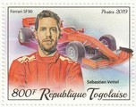 |
100th Anniversary of Birth of Fangio |
2011 European Grand Prix Valencia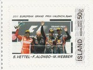 |
2011 British Grand Prix Silverstone  |
2011 Hugraian Grand Prix Hungaroring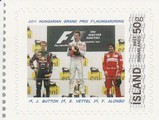 |
2011 German Grand Prix Nurburgring  |
2011 Spanish Grand Prix  |
2011 Malaysian Grand Prix  |
2011 Canadian Grand Prix  |
2011 Turkish Grand Prix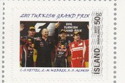 |
2011 Chinese Grand Prix  |
2011 Hungarian Grand Prix - Jenson Button - McLaren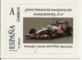 |
100th Anniversary of the Birth of Juan Manuel Fangio |
2012
2012 was the first season to be contested over 20 rounds. The United States Grand Prix returned, it was held at the Circuit of the Americas, a purpose-built circuit in Austin, Texas. The Bahrain Grand Prix was re-instated. The grid now included six World Champion drivers, with the return of Kimi Raikkonen. The first seven races were won by seven different drivers. Pastor Maldonado gave Williams their first victory since 2004 when Juan Pablo Montoya won the Brazilian Grand Prix. Fernando Alonso lead the championship for a large portion of the season, despite his Ferrari being inferior to Sebastian Vettel's Red Bull. However, Vettel managed to make it three titles in a row, for driver and constructor, at the final race of the season. Michael Schumacher retired at the end of the season, this time for good and it was announced that Lewis Hamilton would replace him at Mercedes GP for 2013 and so leave McLaren.
2012 was the first season to be contested over 20 rounds. The United States Grand Prix returned, it was held at the Circuit of the Americas, a purpose-built circuit in Austin, Texas. The Bahrain Grand Prix was re-instated. The grid now included six World Champion drivers, with the return of Kimi Raikkonen. The first seven races were won by seven different drivers. Pastor Maldonado gave Williams their first victory since 2004 when Juan Pablo Montoya won the Brazilian Grand Prix. Fernando Alonso lead the championship for a large portion of the season, despite his Ferrari being inferior to Sebastian Vettel's Red Bull. However, Vettel managed to make it three titles in a row, for driver and constructor, at the final race of the season. Michael Schumacher retired at the end of the season, this time for good and it was announced that Lewis Hamilton would replace him at Mercedes GP for 2013 and so leave McLaren.
Constructor Title: Red Bull |
Driver Title: Sebastian Vettel |
70th Monaco Grand Prix - 2012 |
2012 Fernando Alonso European Grand Prix Winner  |
2012 Hungarian Grand Prix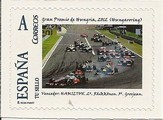 |
2012 German Grand Prix winner - Fernando Alonso, Ferrari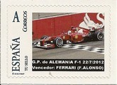 |
Sebastian Vettel triple World Champion |
Sebastian Vettel triple World Champion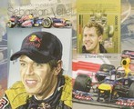 |
2013
In 2013, Sebastian Vettel successfully defended his title; he won his fourth consecutive title and in doing so became only the third driver in the history of the sport to win four consecutive Drivers' Championships. Additionally, Vettel was recognised by the Laureus World Sports Awards as the Sportsman of the Year, only the second racing driver to be so recognised. The 2013 season was the final year that F1 would use the 2.4 litre V8 engines which were introduced in 2006. Also in 2013 there were a number of rule and regulation changes as the seventh Concorde Agreement came into force. This included a proposed floatation on the Singapore Stock Exchange (whih was delayed due to weak markets and econimic uncertainty) and the introduction of cost-control measures.
In 2013, Sebastian Vettel successfully defended his title; he won his fourth consecutive title and in doing so became only the third driver in the history of the sport to win four consecutive Drivers' Championships. Additionally, Vettel was recognised by the Laureus World Sports Awards as the Sportsman of the Year, only the second racing driver to be so recognised. The 2013 season was the final year that F1 would use the 2.4 litre V8 engines which were introduced in 2006. Also in 2013 there were a number of rule and regulation changes as the seventh Concorde Agreement came into force. This included a proposed floatation on the Singapore Stock Exchange (whih was delayed due to weak markets and econimic uncertainty) and the introduction of cost-control measures.
Constructor Title: Red Bull |
20th Anniversary of Nigel Mansell holding F1 and IndyCar drivers titles |
20th Anniversary of Nigel Mansell holding F1 and IndyCar drivers titles |
20th Anniversary of Nigel Mansell holding F1 and IndyCar drivers titles |
Sebastian Vettel World Champion 2013  |
Sebastian Vettel Four Times World Champion |
Sebastian Vettel Four Times World Champion |
2014
The 2014 season will be remembered as the first season since 1994 to have an ultimately fatal accident. Jules Bianchi succumbed to the injuries he sustained during the Japanese Grand Prix (race day saw appauling conditions with heavy rain - Bianchi lost control and collided with a tractor crane), he died on 17 July 2015 after spending nine months in a coma following the accident. A new engine formula for was introduced for the 2014 season, the new formula specified a 1.6 litre turbocharged V6 engine that incorporated an energy recovery system into its build. There were a number of revisions to the race calendar including the re-introduction of the Russian Grand Prix (held for the first time in a century) at the Sochi Autodrom, and the Austrian Grand Prix at the Red Bull Ring in Spielberg. Mercedes driver Lewis Hamilton won his second World Drivers' Championship and Mercedes secured their first World Constructors' Championship.
The 2014 season will be remembered as the first season since 1994 to have an ultimately fatal accident. Jules Bianchi succumbed to the injuries he sustained during the Japanese Grand Prix (race day saw appauling conditions with heavy rain - Bianchi lost control and collided with a tractor crane), he died on 17 July 2015 after spending nine months in a coma following the accident. A new engine formula for was introduced for the 2014 season, the new formula specified a 1.6 litre turbocharged V6 engine that incorporated an energy recovery system into its build. There were a number of revisions to the race calendar including the re-introduction of the Russian Grand Prix (held for the first time in a century) at the Sochi Autodrom, and the Austrian Grand Prix at the Red Bull Ring in Spielberg. Mercedes driver Lewis Hamilton won his second World Drivers' Championship and Mercedes secured their first World Constructors' Championship.
Constructor Title: Mercedes |

20th Anniversary of the Death of Ayrton Senna |
20th Anniversary of the Death of Ayrton Senna |
20th Anniversary of the Death of Ayrton Senna |
20th Anniversary of the Death of Ayrton Senna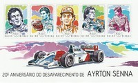 |
20th Anniversary of the Death of Ayrton Senna |
20th Anniversary of the Death of Ayrton Senna |
20th Anniversary of the Death of Ayrton Senna |
20th Anniversary of the Death of Ayrton Senna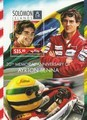 |
20th Anniversary of the Death of Ayrton Senna |
2014 Russian Grand Prix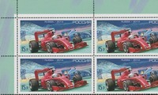 |
20th Anniversary of the Death of Ayrton Senna  |
20th Anniversary of the Death of Ayrton Senna |
20th Anniversary of the Death of Ayrton Senna  |
20th Anniversary of the Death of Ayrton Senna |
20th Anniversary of the Death of Ayrton Senna |
65th Anniversary of Formula 1 |
65th Anniversary of Formula 1  |
2014 Malaysion Grand Prix |
2015
In 2015 there were further changes to the race calendar - the season saw the return of the Mexican Grand Prix (which had not held an F1 race since 1992) and the German Grand Prix was cancelled after a venue could not be agreed upon, leaving the nation without a World Championship event for the first time in fifty-five years. Lewis Hamilton secured his third Drivers' Championship with three races left in the season and the Mercedes AMG Petronas F1 Team clinched the 2015 Constructors' Championship at the Russian Grand Prix, ahead of Ferrari and Williams, and ended the season with a record 703 points.
In 2015 there were further changes to the race calendar - the season saw the return of the Mexican Grand Prix (which had not held an F1 race since 1992) and the German Grand Prix was cancelled after a venue could not be agreed upon, leaving the nation without a World Championship event for the first time in fifty-five years. Lewis Hamilton secured his third Drivers' Championship with three races left in the season and the Mercedes AMG Petronas F1 Team clinched the 2015 Constructors' Championship at the Russian Grand Prix, ahead of Ferrari and Williams, and ended the season with a record 703 points.
Constructor Title: Mercedes |

125th Anniversary of the Automobile Club de Monaco |
2016
In 2016, the grid expanded to 22 cars as the Haas F1 Team entered the championship. Also, Renault returned to the sport as a constructor after a four-year absence following their takeover of Lotus. The race calendar also expanded as the German Grand Prix returned and the European Grand prix was also revived - the event was held at a new venue in Baku, Azerbaijan. Nico Rosberg won the Drivers' Championship in the final race of the season, beating teammate Lewis Hamilton, and so he became only the second son of a former champion to also win the title. Rosberg then retired from the sport shortly afterwards. Mercedes defended the Constructors' title. From the Monaco race weekend onwards, the FIA allowed drivers to choose alternative helmet designs for one race weekend per season, a practice previously prohibited as drivers were required to wear the same design to make them more recognisable to spectators and television audiences.
In 2016, the grid expanded to 22 cars as the Haas F1 Team entered the championship. Also, Renault returned to the sport as a constructor after a four-year absence following their takeover of Lotus. The race calendar also expanded as the German Grand Prix returned and the European Grand prix was also revived - the event was held at a new venue in Baku, Azerbaijan. Nico Rosberg won the Drivers' Championship in the final race of the season, beating teammate Lewis Hamilton, and so he became only the second son of a former champion to also win the title. Rosberg then retired from the sport shortly afterwards. Mercedes defended the Constructors' title. From the Monaco race weekend onwards, the FIA allowed drivers to choose alternative helmet designs for one race weekend per season, a practice previously prohibited as drivers were required to wear the same design to make them more recognisable to spectators and television audiences.
Constructor Title: Mercedes |

2016 Grand Prix of Europe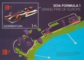 |
2016 Grand Prix of Europe |
2017
The 2017 season was the first season since 1994 in which the reigning champion (Nico Rosberg) did not compete. Lewis Hamilton won his fourth Drivers' Championship title and Mercedes won their fourth consecutive Constructors' Championship title. The Baku event was renamed, becoming the first Azerbaijan Grand Prix (previously the European Grand Prix). The German Grand Prix was removed from the calendar (once again) after the owners of the Hockenheimring and Nurburgring circuits were unable to agree to commercial terms. Liberty Media completed the purchase of the sport from CVC Capital Partners just ahead of the 2017 season. With this acquisition, teams were given more control over creating and uploading content to social media. The technical regulations governing bodywork design were revised for 2017, with the objective of improving lap times by four to five seconds over the 2016 generation of cars.
The 2017 season was the first season since 1994 in which the reigning champion (Nico Rosberg) did not compete. Lewis Hamilton won his fourth Drivers' Championship title and Mercedes won their fourth consecutive Constructors' Championship title. The Baku event was renamed, becoming the first Azerbaijan Grand Prix (previously the European Grand Prix). The German Grand Prix was removed from the calendar (once again) after the owners of the Hockenheimring and Nurburgring circuits were unable to agree to commercial terms. Liberty Media completed the purchase of the sport from CVC Capital Partners just ahead of the 2017 season. With this acquisition, teams were given more control over creating and uploading content to social media. The technical regulations governing bodywork design were revised for 2017, with the objective of improving lap times by four to five seconds over the 2016 generation of cars.
Constructor Title: Mercedes |

75th Anniversary of the Monaco Grand Prix |
Scuderia Ferrari 70th Anniversary - Ferrari SF70H  |
Final Malaysian Grand Prix |
2018
Mercedes and Lewis Hamilton dominated the 2018 season - Hamilton clinched his fifth title at the Mexican Grand Prix, with the team securing its fifth consecutive title at the following race. In 2018, the championship saw the introduction of a new cockpit protection device, known as the ""halo"". The introduction of the halo was the first stage of a planned rollout that would see the device adopted in all FIA-sanctioned open wheel series by 2020.
Mercedes and Lewis Hamilton dominated the 2018 season - Hamilton clinched his fifth title at the Mexican Grand Prix, with the team securing its fifth consecutive title at the following race. In 2018, the championship saw the introduction of a new cockpit protection device, known as the ""halo"". The introduction of the halo was the first stage of a planned rollout that would see the device adopted in all FIA-sanctioned open wheel series by 2020.
Constructor Title: Mercedes |
2019
Once again Mercedes and Lewis Hamilton dominated the season - Hamilton successfully defended the Drivers' Championship for the second year running, winning his sixth championship title at the United States Grand Prix. Mercedes successfully defended the Constructors' Championship, securing the title for the sixth consecutive year at the Japanese Grand Prix. The season comprised 21 races. The F1 community lost a leading figure when Race Director and Technical Delegate Charlie Whiting died unexpectedly days before the opening race of the season in Australia. The regulations introduced a bonus point to the driver (and the constructor) that sets the fastest lap in a race.
Once again Mercedes and Lewis Hamilton dominated the season - Hamilton successfully defended the Drivers' Championship for the second year running, winning his sixth championship title at the United States Grand Prix. Mercedes successfully defended the Constructors' Championship, securing the title for the sixth consecutive year at the Japanese Grand Prix. The season comprised 21 races. The F1 community lost a leading figure when Race Director and Technical Delegate Charlie Whiting died unexpectedly days before the opening race of the season in Australia. The regulations introduced a bonus point to the driver (and the constructor) that sets the fastest lap in a race.
Constructor Title: Mercedes |
Driver Title: Lewis Hamilton 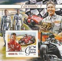 |
Michael Schumacher 50th Birthday |
Michael Schumacher 50th Birthday |
2019 Azerbaijan Grand Prix |
90th Anniversary of the Monaco Grand Prix |
Michael Schumacher 50th Birthday |
Michael Schumacher 50th Birthday  |
Niki Lauda 70th Birthday  |
Niki Lauda 70th Birthday |
Tribute to Niki Lauda |
Tribute to Niki Lauda |